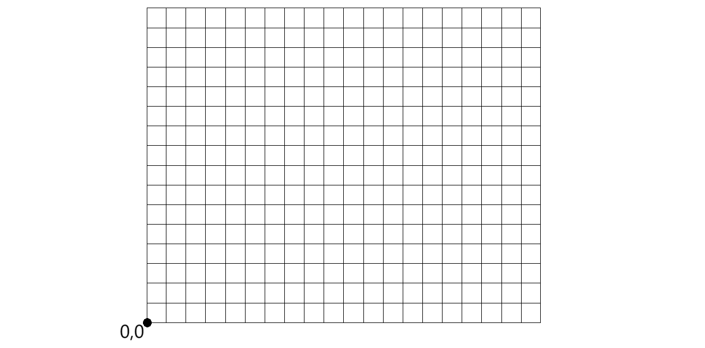

Séance 1 — GPS & Galileo : comment se localiser ?
Objectifs
- Comprendre le principe de la géolocalisation par satellite
- Comprendre la trilatération
1. Activité — Vidéos & questions
Vidéos
Nous allons regarder deux vidéos pour comprendre le fonctionnement des systèmes de localisation.
Questions
-
Combien de satellites sont nécessaires pour déterminer la position d'une personne sur Terre ?
-
Comment s'appelle le procédé qui permet de trouver une position à partir de distances ?
-
Quelle est la formule qui donne une distance à partir d'un temps et d'une vitesse ?
-
Quel type d'horloge y a-t-il dans un satellite GPS ou Galileo ?
-
Quelles sont les deux informations qu'un satellite Galileo ou GPS envoie en permanence ?
-
Pourquoi avons-nous besoin d'un quatrième satellite ?
-
Un récepteur GPS/Galileo envoie-t-il des données aux satellites ?
-
Y a-t-il une limite du nombre d'utilisateurs à Galileo ?
-
De combien de satellites la constellation Galileo est-elle constituée ?
-
À quoi sert le « segment sol » du système Galileo ?
-
Pourquoi l'Europe tenait-elle à créer Galileo ?
2. Activité — Trilatération sur quadrillage
Contexte
On considère le quadrillage ci-dessous avec un repère dont l'origine est en bas à gauche.
Le signal des satellites se déplace à la vitesse v = 2 m/s.
L'utilisateur reçoit à 14h50min29s00 les messages suivants :
| Satellite | Position | Heure d'émission |
|---|---|---|
| sat1 | (2, 14) | 14h50min22s68 |
| sat2 | (16, 13) | 14h50min21s57 |
Questions
(20 colonnes, 16 lignes)

12. Placez les deux satellites sur le quadrillage.
13. Calculez les temps t₁ et t₂ mis par les signaux pour arriver jusqu'à l'utilisateur.
14. Déduisez-en les distances d₁ et d₂ entre chaque satellite et l'utilisateur.
15. Tracez les deux cercles et donnez la position de l'utilisateur.